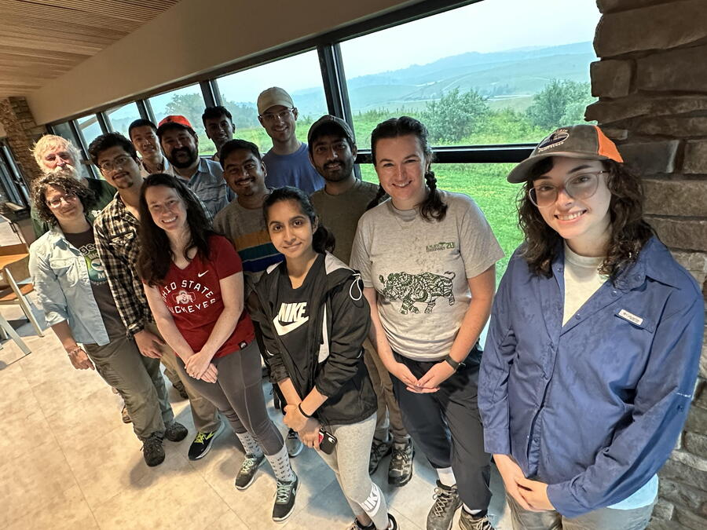

Blending biodiversity with advanced sensing technology, a full Imageomics Institute crew spent June 23–26 at The Wilds nature preserve to launch the inaugural field deployment of the Smart NatureLab project—a major step toward revolutionizing how we study and protect biodiversity.
The team installed two video sensors and two bioacoustic recorders across the landscape of The Wilds, a 9,000-acre conservation center in southeastern Ohio. Once a surface coal mine, The Wilds is now home to a rich variety of endangered and native species roaming open pastures and forests. It’s also the perfect proving ground for the Imageomics team’s new approach to ecological monitoring.
“We had an incredible few days capturing key moments from our first Smart NatureLab deployment,” said Jenna Kline, a researcher focused on autonomous systems and real-time AI for ecology. “Our sensor network, drone flights, and data collection went smoothly, thanks in large part to the collaboration with The Wilds’ Animal Management team.”
The goal: create smart, adaptive systems that allow scientists to remotely monitor animal behavior and habitat conditions—without human interference. The sensors gather real-time video and sound data, which the team will feed into AI models to detect and analyze wildlife patterns over time.
Bioacoustic specialists Patrick Lyon and Brooke Goodman provided key technical support, helping deploy microphones that can distinguish species based on their calls. Meanwhile, drone tests collected aerial footage to further enhance spatial awareness across the site.
This interdisciplinary fusion of machine learning, ecology, and sensor tech reflects the broader mission of the Imageomics Institute, an NSF-funded research center exploring how computer vision and data science can transform biological understanding.
“This is just the beginning,” Kline said. “With these deployments in place, we’re building the foundation for a fully autonomous, intelligent monitoring system that supports conservation decisions on a global scale.”
The team will now begin processing and analyzing the collected data, fine-tuning their algorithms to better detect wildlife and habitat signals. Future plans include scaling up deployments, integrating more sensor types, and expanding partnerships with conservation groups.
"Research here enables research in the wild," Kline said, noting how the data collected will be valuable in future field tests in Kenya.
To follow the project’s progress, visit: https://imageomics.github.io/naturelab